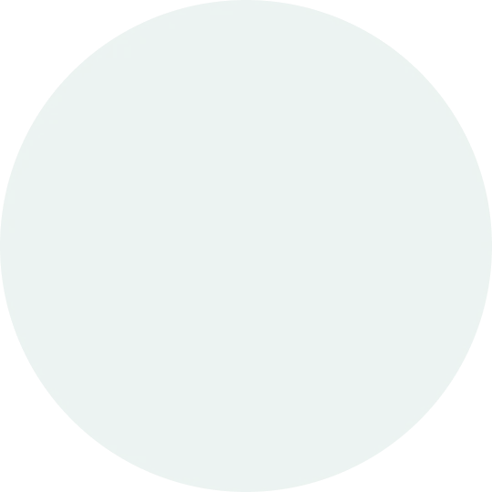
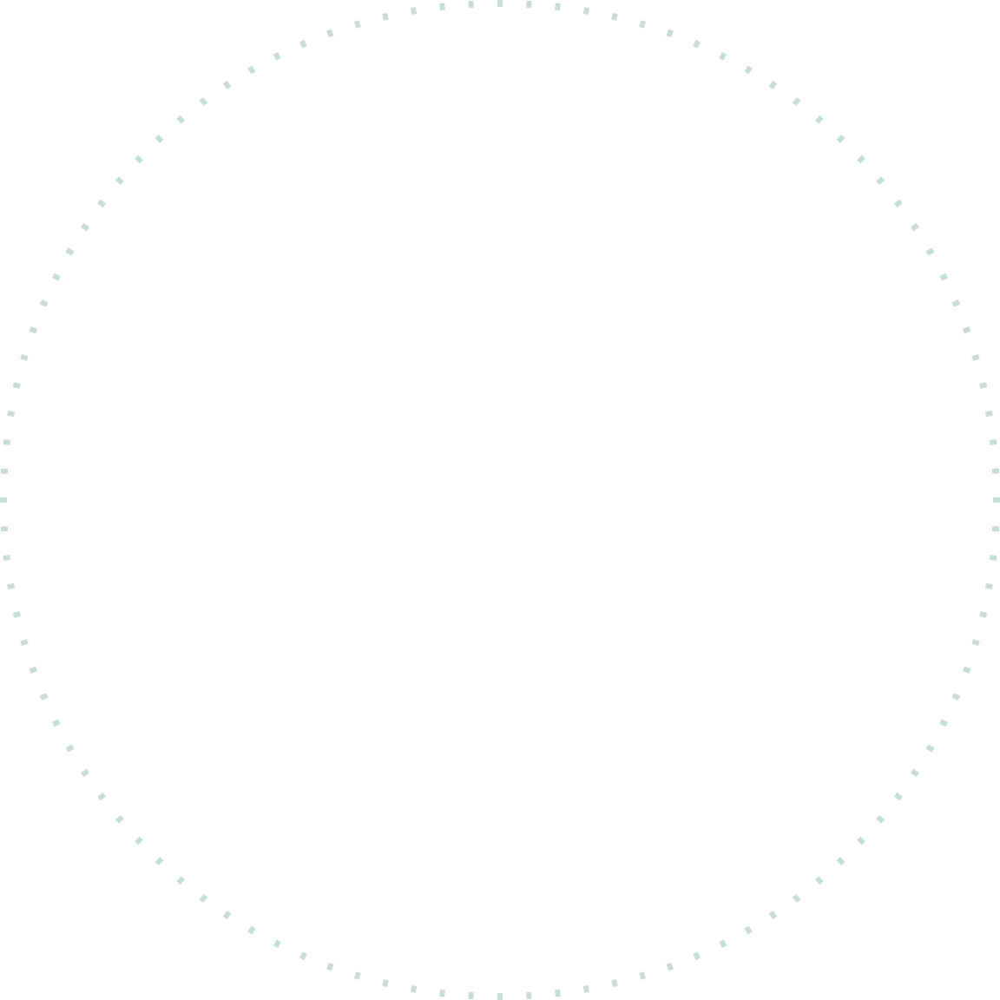
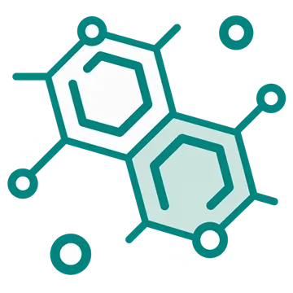

Bioconversion
Bioconversion Technology
생물전환 기술
생물전환기술은 효소와 미생물과 같은 생체 촉매를 이용하여 원료의 기능성을 향상시키는 친환경적인 기술입니다.
당사의 독특한 효소응용기술을 활용하여 비타민 유도체, 플라보노이드 및 다양한 바이오케미컬 등을 생산합니다.


BIOCATALYST

Bioconversion효소응용기술
FUNCTIONAL INGREDIENTS
- 비타민 유도체
- 플라보노이드
- 다양한 바이오케미컬